Materialpaket BwR Klasse 8 Realschule Bayern – Buchführung Grundlagen: 8 Arbeitshefte mit Lösungen
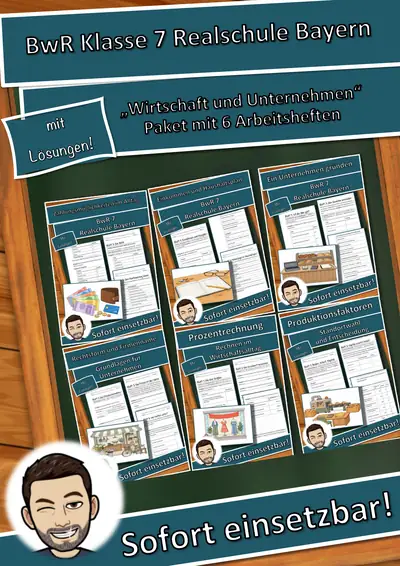
Materialpaket BwR Klasse 7 Realschule Bayern – Wirtschaft und Unternehmen: 6 Arbeitshefte mit Lösungen
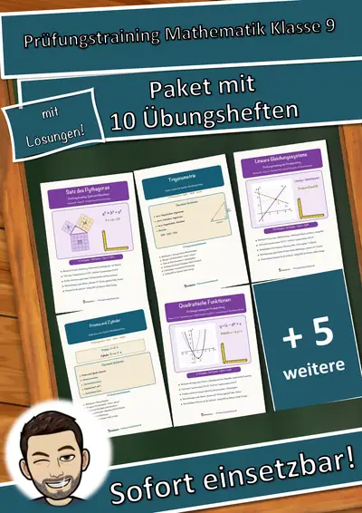
Materialpaket Prüfungstraining Mathematik Klasse 9: 10 Übungshefte mit Prüfungsteil und Lösungen

Materialpaket Prüfungstraining Erdkunde Klasse 9: 5 Übungshefte mit Prüfungsteil und Lösungen

Materialpaket Prüfungstraining Erdkunde Klasse 8: 6 Übungshefte mit Prüfungsteil und Lösungen

Materialpaket Prüfungstraining Chemie Klasse 9: 5 Übungshefte mit Prüfungsteil und Lösungen
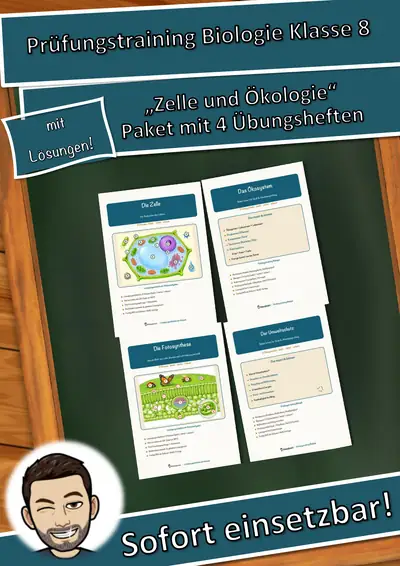
Materialpaket Prüfungstraining Biologie Klasse 8 – Zelle und Ökologie: 4 Übungshefte mit Prüfungsteil und Lösungen

Materialpaket Prüfungstraining Biologie Klasse 8 – Der menschliche Körper: 10 Übungshefte mit Prüfungsteil und Lösungen

Materialpaket Prüfungstraining Physik Klasse 9: 4 Übungshefte mit Prüfungsteil und Lösungen

Materialpaket Prüfungstraining Geschichte Klasse 8: 5 Übungshefte mit Prüfungsteil und Lösungen

Materialpaket Prüfungstraining Geschichte Klasse 9: 3 Übungshefte mit Prüfungsteil und Lösungen

Materialpaket Prüfungstraining Wirtschaft Klasse 9: 8 Übungshefte mit Prüfungsteil und Lösungen

Materialpaket Prüfungstraining Deutsch Klasse 9: 4 Übungshefte mit Prüfungsteil und Lösungen
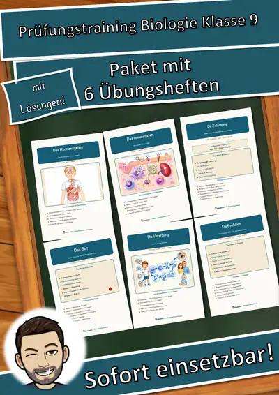
Materialpaket Prüfungstraining Biologie Klasse 9: 6 Übungshefte mit Prüfungsteil und Lösungen

Materialpaket Prüfungstraining Physik Klasse 8 – Wärme, Licht, Schall und Elektrizität: 6 Übungshefte mit Prüfungsteil und Lösungen

Materialpaket Prüfungstraining Physik Klasse 8 – Mechanik: 5 Übungshefte mit Prüfungsteil und Lösungen
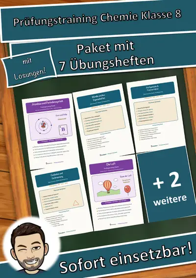
Materialpaket Prüfungstraining Chemie Klasse 8: 7 Übungshefte mit Prüfungsteil und Lösungen
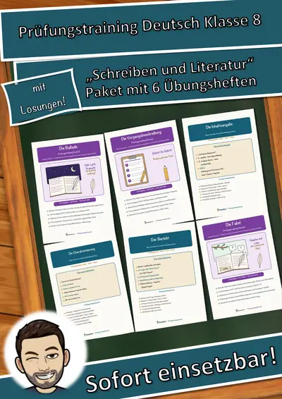
Materialpaket Prüfungstraining Deutsch Klasse 8 – Schreiben und Literatur: 6 Übungshefte mit Prüfungsteil und Lösungen
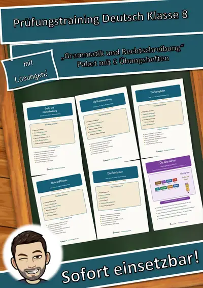
Materialpaket Prüfungstraining Deutsch Klasse 8 – Grammatik und Rechtschreibung: 6 Übungshefte mit Prüfungsteil und Lösungen

Materialpaket Prüfungstraining Sozialkunde Klasse 9: 9 Übungshefte mit Prüfungsteil und Lösungen

Materialpaket Wort-Bild-Karten Grundschule Klasse 1–4 – Essen und Einkaufen: 3 Themen, mit Lösungsseite
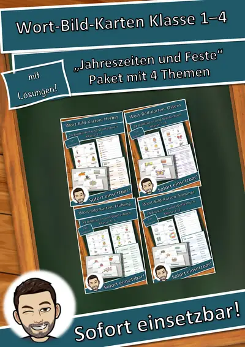
Materialpaket Wort-Bild-Karten Grundschule Klasse 1–4 – Jahreszeiten und Feste: 4 Themen, mit Lösungsseite

Materialpaket Wort-Bild-Karten Grundschule Klasse 1–4 – Ich und Alltag: 5 Themen, mit Lösungsseite
Materialpaket Wort-Bild-Karten Grundschule Klasse 1–4 – Fantasie und Abenteuer: 5 Themen, mit Lösungsseite

Verwaltung und Vertrieb – Arbeitsheft mit Lösungen (BwR 10, Realschule Bayern)

Verhaltensökonomie Lückentext mit Wortspeicher Hörverstehen und Suchsel
Treibhausgase Lückentext mit Wortspeicher Hörverstehen und Suchsel

Tonhöhe Lückentext mit Wortspeicher Hörverstehen und Suchsel
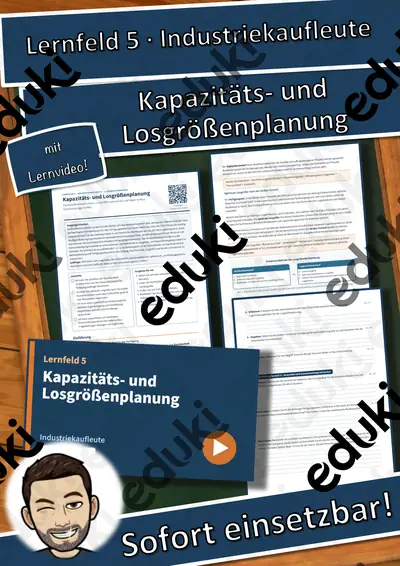
Lernfeld 5 Industriekaufleute: Kapazitäts- und Losgrößenplanung – Einführung, Übungen, Lösungen + Lernvideo

LF 8 Anlagenmechaniker/-in SHK: Vorwandinstallation und Schallschutz – Übungen, Lösungen + Lernvideo

Zuschlagssätze Material und Fertigung – Arbeitsheft mit Lösungen (BwR 10, Realschule Bayern)

Technikethik Lückentext mit Wortspeicher Hörverstehen und Suchsel

LF 9 Zahnmedizinische Fachangestellte: Wareneingang, Lagerung und Rechnungsprüfung – Übungen, Lösungen + Lernvideo
LF 1 Kaufleute für Büromanagement: Betriebsprofil und Kriterienkatalog – Übungen, Lösungen + Lernvideo
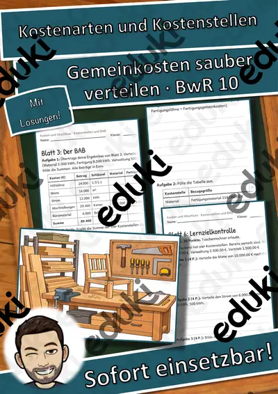
Kostenarten und Kostenstellen – Arbeitsheft mit Lösungen (BwR 10, Realschule Bayern)
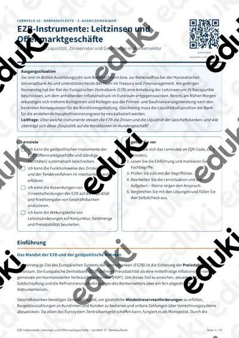
LF10_EZB_Instrumente_Leitzinsen_und_Offenmarktgeschäfte_Berufsschule
Kostenstellen_BAB_BwR10

Preisuntergrenze – Arbeitsheft mit Lösungen (BwR 10, Realschule Bayern)
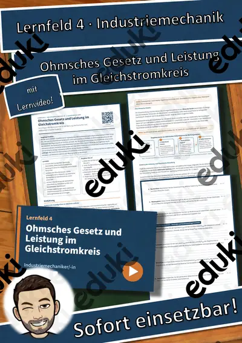
LF 4 Industriemechaniker/-in: Ohmsches Gesetz und Leistung im Gleichstromkreis – Übungen, Lösungen + Lernvideo

Tastsinn Lückentext mit Wortspeicher Hörverstehen und Suchsel

Modellunternehmen für den BwR-Unterricht – Arbeitsheft mit Lösungen (BwR 8, Realschule Bayern)

Periodenrichtig abgrenzen – Arbeitsheft mit Lösungen (BwR 10, Realschule Bayern)

Zusatzauftrag – Arbeitsheft mit Lösungen (BwR 10, Realschule Bayern)
Teilkostenrechnung: Einstieg – Arbeitsheft mit Lösungen (BwR 10, Realschule Bayern)

Taktarten Lückentext mit Wortspeicher Hörverstehen und Suchsel

Suchauftrag Lückentext mit Wortspeicher Hörverstehen und Suchsel
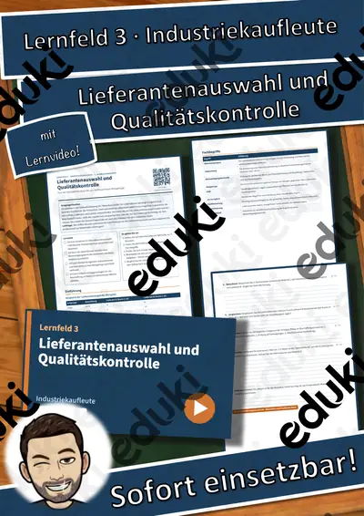
LF 3 Industriekaufleute: Lieferantenauswahl und Qualitätskontrolle – Übungen, Lösungen + Lernvideo

Zwei Produkte im Vergleich – Arbeitsheft mit Lösungen (BwR 10, Realschule Bayern)
Keine Materialien gefunden – versuch einen anderen Suchbegriff oder Filter.